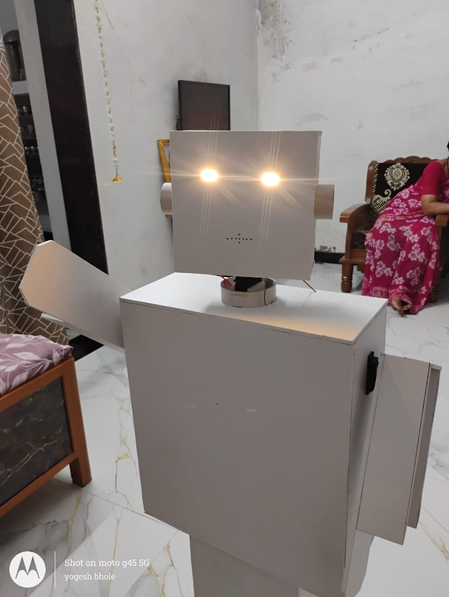
World Robot Olympiad 2026
Ramesh is an intelligent humanoid museum guide developed by Team Techno Heritage to make museum visits more interactive, engaging, and educational. The robot communicates with visitors, provides historical information about artifacts, performs realistic hand gestures, and navigates through museum spaces using Bluetooth-controlled movement. Designed around the WRO 2026 theme, "Robot Meets Culture", Ramesh aims to preserve and promote cultural heritage through robotics and artificial intelligence.
Drive Motors
Gesture Servos
Main Components
WRO Season
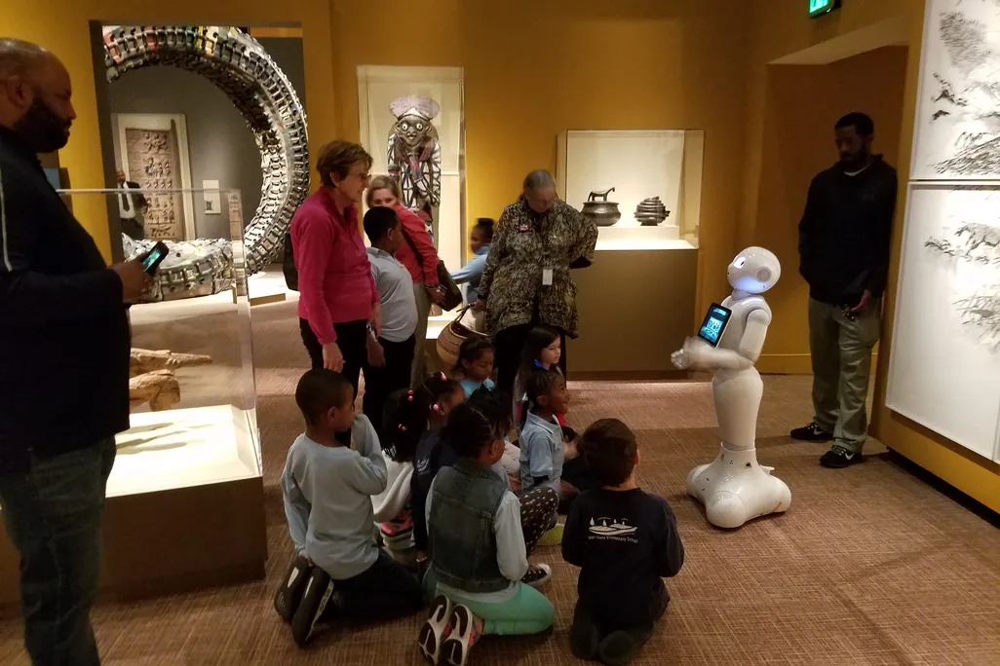
Ramesh is an intelligent humanoid historical guide developed by Team Techno Heritage for the World Robot Olympiad 2026 Future Innovators competition. The robot has been designed to make museum visits more interactive, educational, and enjoyable for visitors of all ages.
Instead of depending only on human guides, visitors can interact directly with Ramesh. Using Bluetooth communication, the robot can move in different directions, stop at exhibits, and provide detailed historical information about artifacts through its speaker system. While explaining, Ramesh performs realistic arm gestures using three MG995 servo motors, making the interaction feel natural and engaging.
The robot is built using an ESP32 development board, Bluetooth communication, motor control, gesture mechanisms, rechargeable lithium-ion batteries, and an SD-card-based audio system. The entire design focuses on creating an affordable, portable, and user-friendly museum assistant capable of preserving and sharing India's rich cultural heritage through robotics.
Many museums have only a small number of guides available, making it difficult to assist every visitor, especially during weekends, holidays, and school visits.
Visitors often have to wait for guided tours or explore the museum without receiving detailed explanations about the historical artifacts on display.
Different visitors have different levels of historical knowledge. Many children and tourists require simple, engaging explanations that traditional information boards cannot always provide.
Many museums still rely mainly on static displays and printed information. There is an opportunity to use robotics and intelligent systems to make learning more interactive and memorable.
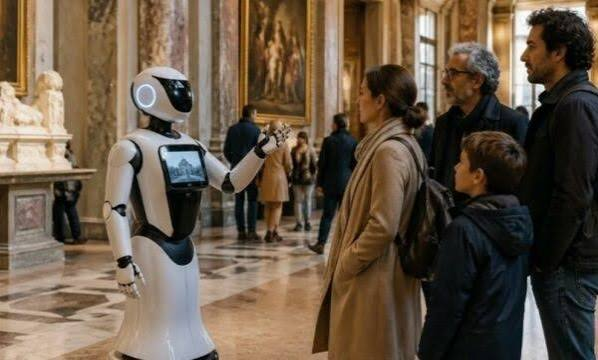
Ramesh acts as an intelligent robotic museum guide capable of interacting with visitors and providing historical information about artifacts in an engaging way. Visitors can control the robot through Bluetooth commands, allowing it to move to different exhibits and begin explanations.
As the robot narrates information through its speaker, its three servo-powered arms perform synchronized gestures, making the presentation feel more natural and attractive. The rechargeable design allows continuous operation inside museums without requiring frequent maintenance.
By combining robotics, electronics, and historical education, Ramesh reduces dependence on human guides while providing an interactive learning experience for students, tourists, and families. The project demonstrates how technology can help preserve and promote cultural heritage in a modern and engaging manner.
To make museums smarter, more interactive, and accessible by using intelligent robotic guides that inspire curiosity, preserve cultural heritage, and improve learning experiences for visitors around the world.
To develop affordable and innovative robotics solutions that combine technology, education, and culture while encouraging students to explore science, engineering, and India's rich historical heritage through practical innovation.
Ramesh combines robotics, embedded systems, and interactive storytelling to create a unique museum experience. The robot performs multiple tasks simultaneously, making museum visits more educational, engaging, and memorable.
Visitors or museum staff can control Ramesh using Bluetooth commands through an HC-05 module, allowing smooth navigation without complicated equipment.
Four high-torque DC motors allow the robot to move forward, backward, left, right, and stop accurately while guiding visitors inside museum galleries.
Historical information is stored on an SD card and played through a MAX98357A amplifier connected to a high-quality speaker for clear voice output.
Three MG995 servo motors move the robot's arms while it explains historical artifacts, making conversations more natural and engaging.
Powered by rechargeable lithium-ion batteries, Ramesh can operate for extended periods inside museums without constant battery replacement.
Ramesh is designed to guide visitors, explain artifacts, improve visitor engagement, and demonstrate how robotics can preserve cultural heritage.
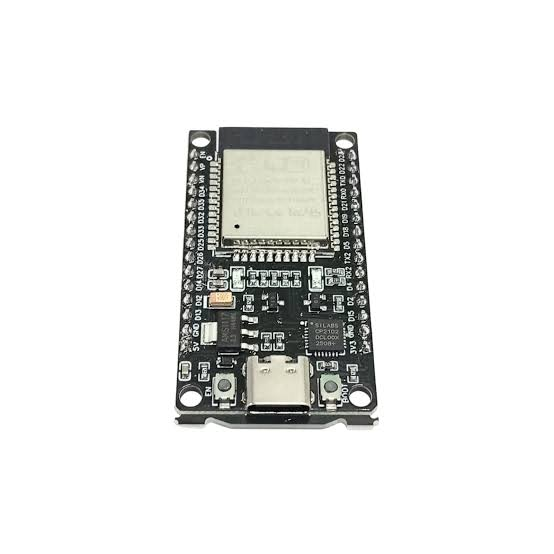
The ESP32 acts as the brain of Ramesh. It processes Bluetooth commands, controls the motors and servos, manages audio playback, and coordinates all robot operations.
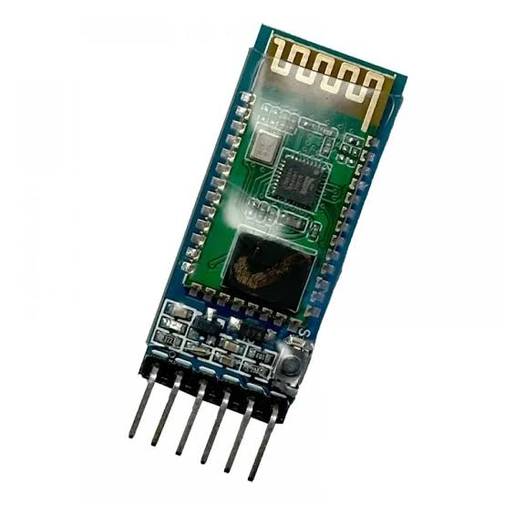
Provides wireless communication between the controller and the robot, replacing the microphone-based system for more reliable command recognition.
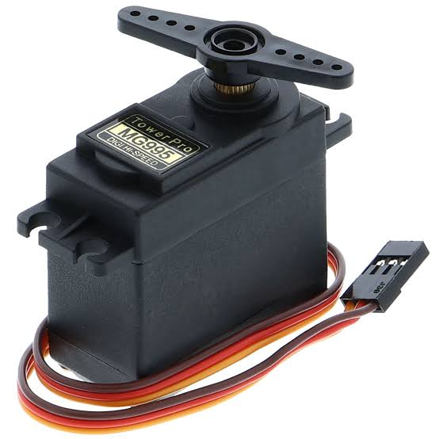
Three servo motors create realistic hand gestures while Ramesh explains museum artifacts, improving visitor interaction.
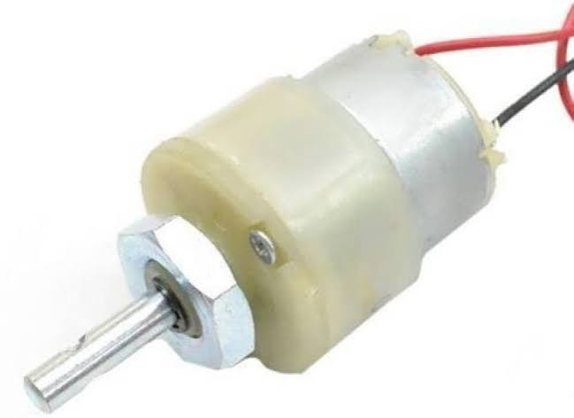
Four DC geared motors provide smooth movement in all directions, enabling the robot to navigate museum pathways.
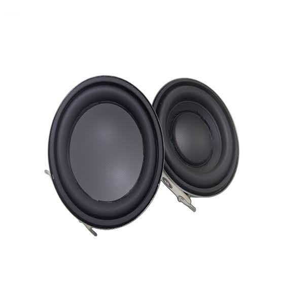
A MAX98357A I2S amplifier connected to a 3W 8Ω speaker plays historical explanations with clear and understandable sound.
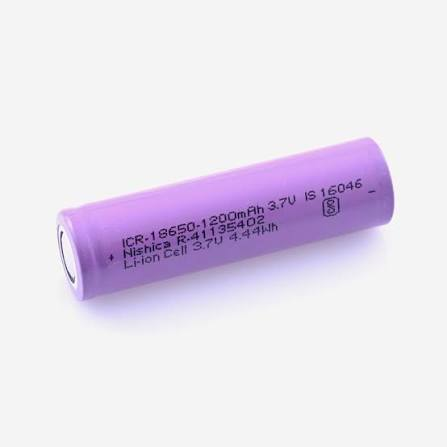
Three rechargeable 3.7V lithium-ion cells supply power to the robot through a charging module, ensuring reliable operation.
Visitor connects to Ramesh through Bluetooth.
ESP32 receives the command and processes it.
The robot moves toward the selected location or exhibit.
Audio stored on the SD card is played through the speaker.
Servo motors perform synchronized gestures while speaking.
ESP32 Development Board
HC-05 Bluetooth Module
4 × 12V DC Geared Motors
3 × MG995 Servo Motors
MAX98357A + 3W Speaker
4GB SD Card
3 × 3.7V Li-ion Batteries
Sunboard Structure
Every successful innovation begins with a simple idea. Our journey involved research, planning, design, testing, and continuous improvements to create an educational robot capable of making museum visits more interactive.
Our team studied the WRO 2026 theme "Robot Meets Culture" and observed that many museums have limited human guides. Visitors often miss important historical information. This inspired us to design a humanoid historical guide capable of interacting with visitors.
We researched museums, historical artifacts, robotic guidance systems, and suitable electronic components. Different ideas were evaluated before selecting the current robot design and communication system.
The robot body was built using lightweight Sunboard. Electronic components including the ESP32, motor driver, Bluetooth module, batteries, amplifier, speaker, and servo motors were installed carefully inside the body.
The ESP32 was programmed to receive Bluetooth commands, control movement, activate gesture motors, and play historical audio stored on the SD card. Multiple tests were carried out to improve movement accuracy and overall system reliability.
During testing we replaced microphone-based control with Bluetooth communication because the microphone was detecting unwanted vibration and environmental noise. This significantly improved reliability and user experience.
Initially we planned to control the robot using voice commands. However, the microphone also detected motor vibration and surrounding noise, causing unwanted command recognition. We solved this by replacing voice input with Bluetooth communication.
Maintaining balance while installing motors, batteries, servos, and electronic components required careful weight distribution inside the robot body.
Multiple electronic modules required organized wiring to avoid loose connections and simplify maintenance during testing.
Different components operate at different voltages. A proper rechargeable power system was designed to provide stable operation for motors, controller, servos, and audio system.
Combining Bluetooth communication, motor control, servo gestures, and audio playback into one synchronized program required continuous testing and debugging.
Designing a lightweight yet durable humanoid body capable of supporting all electronic components required several design improvements and structural modifications.
These images represent different stages of designing, constructing, testing, and improving the Ramesh Historical Guide Robot.
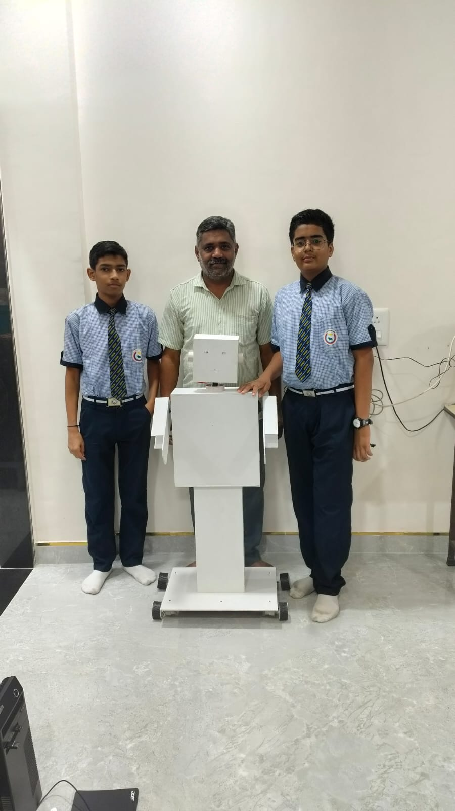
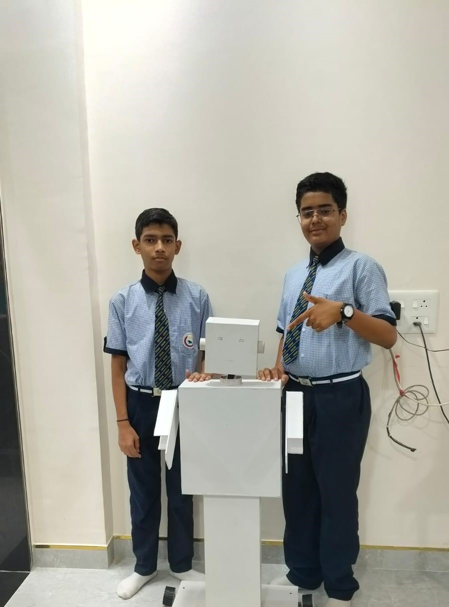
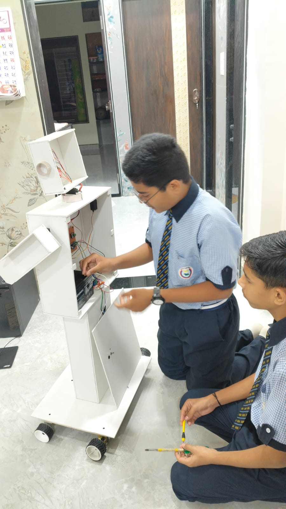
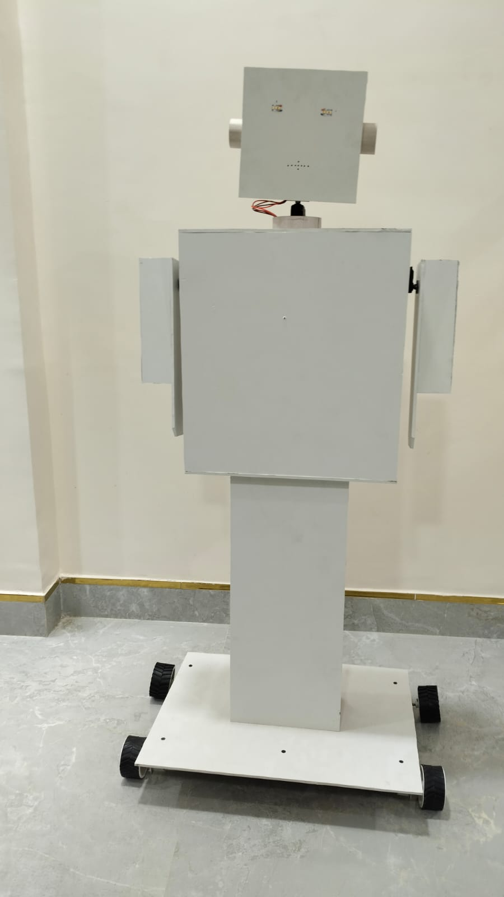
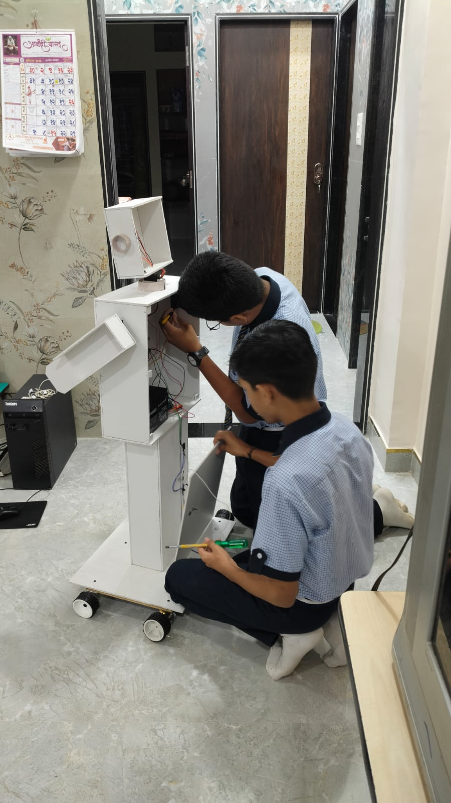
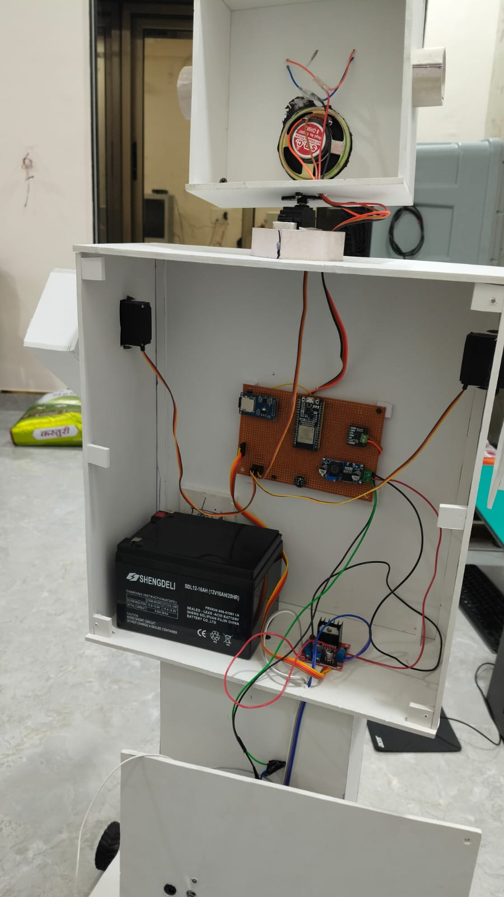
Integrate an advanced voice recognition module capable of accurately understanding visitor questions in different environments.
Enable explanations in multiple Indian and international languages to improve accessibility for tourists.
Use sensors and intelligent navigation to automatically guide visitors through museum exhibitions without manual control.
Introduce AI-based conversations so Ramesh can answer visitor questions naturally and provide personalized educational experiences.
We are passionate students who believe robotics can preserve culture, improve education, and create engaging museum experiences through innovation.
Team Member
Responsible for robot development, programming, documentation, website development, testing and research.
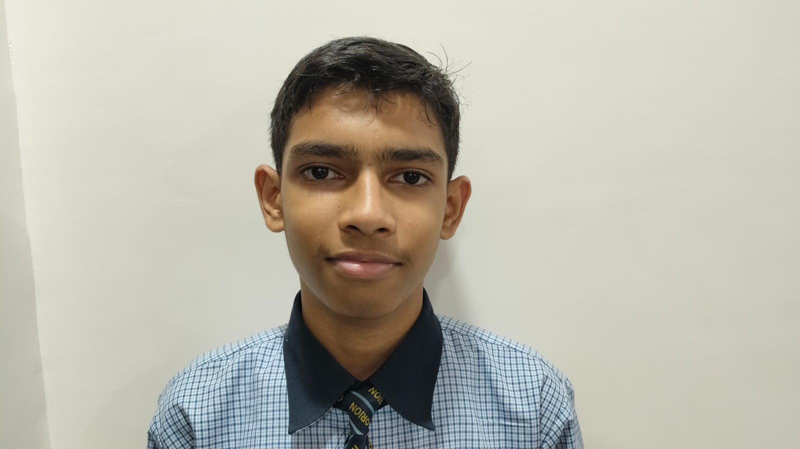
Team Member
Responsible for robot construction, electronics, mechanical assembly, testing and innovation.
Coach & Mentor
Guided the complete development process and encouraged innovation, teamwork and technical learning.
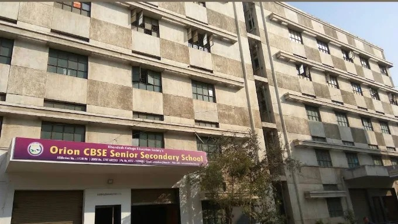
Our project has been developed with continuous learning, teamwork, creativity and innovation. The school encourages students to explore robotics, engineering and scientific thinking through practical projects and competitions.
Robot Meets Culture
Combining robotics and cultural heritage to create an interactive educational museum experience.
Inspire students to solve real-world problems through engineering, creativity and technology.
Ramesh - The Historical Guide
Team Techno Heritage
Orion CBSE English Medium School
WRO Future Innovators 2026